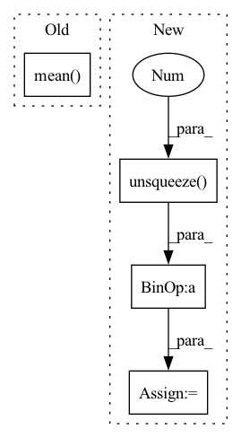

Pattern ID :18662
Before Change
target = (target * alpha.view(bs,c,1))
res = input - target
sisdr = 10 * torch.log10(((target**2).sum(-1)/(res**2).sum(-1) + self.eps)).mean()
return -sisdr
After Change
target = target - target_mean
alpha = (input * target).sum(-1) / ((target ** 2).sum(-1))
target = target * alpha.unsqueeze(-1 )
res = input - target
losses = 10 * torch.log10((target**2).sum(-1)/((res**2).sum(-1) + self.eps) + self.eps)
losses = apply_reduction(losses, self.reduction)In pattern: SUPERPATTERN
Frequency: 3
Non-data size: 4
Instances Fragment ID: 60862673
Project Name: csteinmetz1/auraloss
Commit Name: 9cacf0f11d2b6f8f1671cf14ca5fda3c1e3632aa
Time: 2020-12-10
Author: csteinmetz1@gmail.com
File Name: auraloss/time.py
M Class Name: SISDRLoss
N Class Name: SISDRLoss
M Method Name: forward(3)
N Method Name: forward(3)
M Parent Class: Module
N Parent Class: torch.nn.Module
M File Name: auraloss/time.py
N File Name: auraloss/time.py
M Start Line: 99
M End Line: 112
N Start Line: 136
N End Line: 146
Before Change
x = torch.cat((x, static_x), dim=1)
// take the mean of all time steps (rows) with additional row for static features; output size = (batch_size, 64)
x = torch.mean( x, 1)
// pass through fully-connected part to lower dimension to 2 (binary classification)
return self.feed_forward(x)
After Change
// take the masked mean of all time steps (rows) with additional row for static features; output size = (batch_size, 64)
mask = torch.cat((mask, torch.ones((x.size()[0], 1), dtype=torch.bool)), dim=1).unsqueeze(2).long()
time_length = torch.FloatTensor(time_length).unsqueeze(1 )
x = torch.sum(x * (1 - mask), dim=1) / (time_length + 1) // masked aggregation
// pass through fully-connected part to lower dimension to 2 (binary classification)
return self.feed_forward(x) Fragment ID: 60862690
Project Name: mims-harvard/raindrop
Commit Name: c78a0c22f831e2f0ee3f125343ad6e4a2894d680
Time: 2021-08-19
Author: mz4730@student.uni-lj.si
File Name: code/baselines/Transformer_baseline.py
M Class Name: Transformer_P12
N Class Name: Transformer_P12
M Method Name: forward(4)
N Method Name: forward(4)
M Parent Class: nn.Module
N Parent Class: nn.Module
M File Name: code/baselines/Transformer_baseline.py
N File Name: code/baselines/Transformer_baseline.py
M Start Line: 147
M End Line: 163
N Start Line: 146
N End Line: 167
Before Change
s1_q = t.maximum(error, t.zeros_like(error))
mqloss = (quantiles * sq + (1 - quantiles) * s1_q)
return t.mean( t.mean(mqloss, axis=1))
// Cell
def wMQLoss(y: t.Tensor, y_hat: t.Tensor, quantiles: t.Tensor,
mask: t.Tensor =None) -> t.Tensor:After Change
// Match y/weights dimensions and compute weighted average
mask = mask / t.sum(mask)
mask = mask.unsqueeze(-1 )
mqloss = (1/n_q) * mqloss * mask
return t.sum(mqloss)
Fragment ID: 60862696
Project Name: nixtla/neuralforecast
Commit Name: 677abcee8cc7a5cdf5ddb7fa5aabe64514795fd8
Time: 2022-04-05
Author: kin.gtz.olivares@gmail.com
File Name: neuralforecast/losses/pytorch.py
M Class Name: AnonimousClass
N Class Name: AnonimousClass
M Method Name: MQLoss(4)
N Method Name: MQLoss(4)
M Parent Class:
N Parent Class:
M File Name: neuralforecast/losses/pytorch.py
N File Name: neuralforecast/losses/pytorch.py
M Start Line: 351
M End Line: 360
N Start Line: 351
N End Line: 365